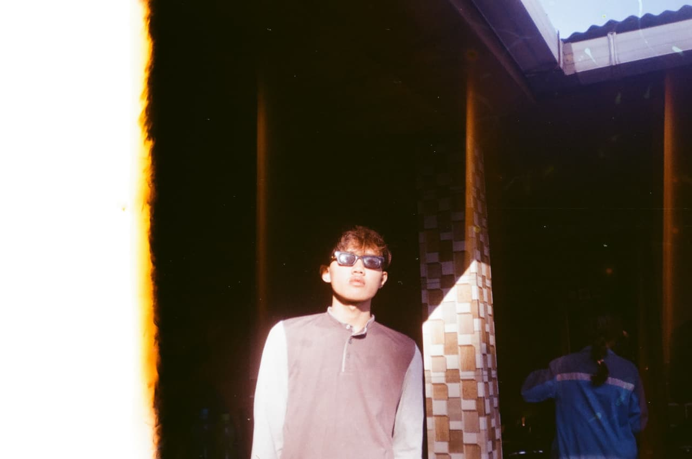

Information Systems Student - Bogor, Indonesia
Building structured digital solutions through discipline, adaptability, and hands-on project experience.
I am Muhammad Naufal Wardhana, an Information Systems student with a strong interest in developing digital systems that are clear, practical, and professionally presented. My experience spans academic projects, web-based applications, event operations, and continuous growth in digital work.
Positioning
Early-career web and systems builder
Best Fit
Internships, project teams, and digital operations
Strength
Structured execution with practical learning

Current Focus
Strengthening my portfolio, sharpening core web capabilities, and preparing to contribute confidently to real-world systems and collaborative projects.
- Information Systems undergraduate with a growing professional foundation
- Hands-on experience in web-based systems and operational support
- Comfortable working independently and in collaborative environments
Web fundamentals
Professional presentation
Team collaboration
Dependable execution
Continuous development
About Me
Dependable, adaptable, and prepared to contribute with professionalism.
I graduated from high school in 2023 and am currently pursuing a degree in Information Systems at Institut Bisnis Informatika Kesatuan in Bogor. I approach every opportunity with discipline, consistency, and a genuine commitment to continuous improvement.
Alongside my academic work, I have taken part in campus initiatives, technical assignments, and field-based activities that have strengthened my communication, coordination, and professional accountability. I value thoughtful execution, strong teamwork, and steady long-term growth.
More recently, I have been developing web-based systems such as E-Magang registration and attendance applications for Kejaksaan Negeri Kabupaten Bogor using CodeIgniter 3. Through these projects, I focused on building practical features, organizing user flows, and creating systems that support real operational needs. These experiences continue to strengthen my interest in digital development and motivate me to keep learning, improving, and contributing with professionalism.
Full name
Muhammad Naufal Wardhana
Age
20
Languages
Indonesian, English
Base
Bogor, West Java
Availability
Open to internships, freelance work, and collaborative opportunities
Professional Note
I am especially interested in opportunities that allow me to learn quickly, contribute responsibly, and keep developing through practical project experience.
Digital Craft
Creating well-structured digital work with clarity, polish, and close attention to detail.
Team Execution
Supporting projects across academic and field environments through dependable communication, coordination, and follow-through.
Growth Mindset
Continuously refining my skills through webinars, bootcamps, and hands-on experience with digital tools.
Strengths
A developing skill set shaped by practical exposure, technical projects, and continuous learning.
Technical foundations
I focus on practical tools that help me deliver assignments effectively, organize information clearly, and produce more structured web-based work.
HTML
Microsoft Office
Visual Studio Code
R Studio
Professional strengths
These strengths define how I work, especially in environments where deadlines, collaboration, and accountability matter.
Communication
Adaptability
Responsibility
Teamwork
Presentation
Operational support
Documentation
Continuous learning
Certificates
Selected certificates that reflect participation, growth, and consistent professional development.

Portfolio Lens
A certificate section that highlights not only participation, but also the consistency of my learning and development journey.
This selection presents a clearer profile of how I continue to learn, participate, and build stronger professional readiness through academic and development-oriented activities.
Academic
Participation in academic and campus-based activities
Exposure
Learning through seminars, visits, and technical programs
Growth
Continuous development through documented milestones
Academic Certificate
KUPER 2023 Participant Certificate
Certificate of participation in Kuliah Perdana (KUPER) 2023 held by Institut Bisnis dan Informatika Kesatuan with the theme "A New Journey Begins, Be a Professional and Qualified Generation to Become Future Leaders."
- Documented my participation in the 2023 introductory academic program
- Marked an early milestone in my journey at IBI Kesatuan
- Reinforced my readiness to grow in a professional academic environment
Academic Certificate
Company Visit 2025 Certificate
Certificate of participation in Company Visit 2025 with the theme "Innovating the Future: Unlocking the Potential of Modern Technology."
- Documented my participation in the 2025 company visit program
- Connected academic learning with exposure to modern technology themes
- Added relevant proof of active involvement in campus development activities
Bootcamp Certificate
DATCAMP VOL.3 Certificate
Certificate of completion and participation in DATCAMP VOL.3 (Data Science Bootcamp) organized by Himpunan Mahasiswa Sistem Informasi IBI Kesatuan.
- Focused on digital challenges through a data science learning track
- Strengthened my exposure to data science concepts and discussion
- Added formal evidence of my participation in a structured bootcamp
Webinar Certificate
Webinar Data Science Certificate
Certificate of participation in the webinar "Data Science: Trends, Careers, and Success" organized by Himpunan Sistem Informasi, IBI Kesatuan Bogor.
- Expanded my understanding of data science trends and career paths
- Showed my active participation in academic webinar activities
- Added relevant documentation to support my professional development profile
Case Study Focus
Highlighting how the E-Magang systems were structured to solve practical workflow needs, not just display interface screens.
These case-study notes connect the screenshots to actual system thinking: user flow, operational logic, and the practical value each feature was designed to support.
E-Magang Registration Journey
Designed the registration system to guide internship applicants from account access and psychological testing to form submission in a more structured and understandable flow.
- Organized each step so applicants could move through the process with less confusion
- Connected screening results to the next stage of application submission
- Combined institutional content and registration features in one clearer user experience
E-Magang Attendance Operations
Built the attendance system to support daily internship activity tracking, reporting, and administrative monitoring in a way that reflects real operational use.
- Supported check-in, check-out, and daily activity logging in one workflow
- Included reporting features for attendance and activity records
- Added administrator oversight to review records and handle attendance corrections
Practical Development Approach
These projects strengthened how I translate real needs into usable features, clearer navigation, and more dependable system behavior for actual users.
- Focused on features that support real processes instead of presentation alone
- Improved how I think about usability, flow, and operational clarity
- Built stronger confidence in delivering practical web-based systems with CodeIgniter 3
Experience
Experience that has shaped the way I contribute, collaborate, and deliver value.
November 2024
Operational Team - Rafting Event
Supported the execution of a rafting event by helping prepare logistics, coordinate operational requirements, and maintain a smooth event flow. This role strengthened my ability to work responsibly in active, fast-paced field conditions.
2024 - Present
Organizational Experience - Mapala Kesatuan
Through Mapala Kesatuan, I gained organizational experience that strengthened teamwork, field coordination, discipline, and readiness to contribute in active collaborative environments.
March 2026 - April 2026
Project - Sistem Aplikasi E-Magang Kejaksaan Negeri Kabupaten Bogor
I built an E-Magang system for internship applicants at Kejaksaan Negeri Kabupaten Bogor. In this system, applicants register, take a psychological test, and can submit an application form if they pass the test. The Simagang homepage also includes news content related to Kejaksaan Negeri Republik Indonesia.
The system was designed to support the internship registration flow from early screening to form submission, while also presenting institutional news content in a more organized way.
March 2026 - April 2026
Project - Sistem E-Magang Absensi
I built an E-Magang attendance system for Kejaksaan Negeri Kabupaten Bogor. This system is used by internship participants who have already passed the psychological test, so they can manage attendance and daily activity records in one place.
In this system, students can submit morning attendance and check-out, add activity descriptions, print attendance reports, and print activity records. On the administrator side, the system can monitor student attendance and correct records when a student is marked late.
Education
An academic path that supports my growth in systems thinking, digital work, and practical development readiness.
2023 - 2027
Bachelor of Information Systems
Institut Bisnis Informatika Kesatuan
Developing a stronger foundation in information systems, digital problem-solving, and project-based learning.2020 - 2023
Science Major, High School
SMAN 1 Sukaraja Kabupaten Bogor
Built the discipline, consistency, and academic base that later shaped my interest in technology and information systems.
Working Style
A concise view of how I approach work with structure, clarity, and professional responsibility.
Understand the objective
I begin by understanding the goal, the audience, and the practical outcome the work is expected to deliver.
Execute with structure
I focus on structured execution, clear documentation, and results that are both presentable and functional.
Keep improving
I reflect on feedback, learn from experience, and continue refining both my technical capabilities and professional communication.
Contact
Open to internships, project-based roles, and opportunities where I can contribute while continuing to grow.
If you are looking for someone who is disciplined, adaptable, and ready to contribute through thoughtful web and systems work, I would be glad to connect and discuss how I can support your team.